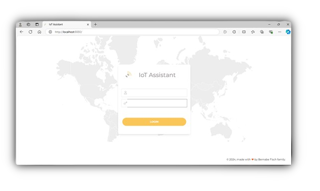

IoT Assistant
IoT Assistant
What is IoT Assistant?
IoT Assistant is an open-source web application that enables to manage things (sensors, actuators, GPS's and cameras) interfaced via MQTT, HTTP or with The Things Network.
Java-based
The app is based in Java Spring Boot and its ready to be run on any machine hosting a JVM like any Windows, Mac or Linux computer or some cheap board (ie a Raspberry Pi Zero W) without the need to virtualize or install third party apps or cloud services.
Quick and Easy
It should meet the needs of most users right from the start, prioritizing simplicity over flexibility while it still allow developers to add more complexity if they have particular requirements such as customizing it or integrating it with third party devices like Aqara or Tuya.
Main functionalities
- Get sensors values.
- Get and set actuators values.
- Get cameras pictures in real time.
- Get GPSs positions.
- Get notifications if some device fails communicating its state within some defined time period.
- Get customizables graphs to visualize sensor values change over time.
- Set rules:
- Get notifications if a sensor value reach some threshold.
- Set some actuator value when a sensor value reach some threshold.
- Get notifications if a GPS position exceeds some range from some position.
- Get camera picture if a sensor value reach some threshold.
- Enable/Disable some rule if a sensor value reach some threshold.
Notifications are supported via web or Telegram. For a complete list of Use Cases see this.
Getting started
The only step needed to run IoT Assistant is to execute the .jar file contained in the .zip file provided above. Execute it by double-click on it or via command line this way:
# java -jar iot-assistant-0.0.1.jar
Depending on the Java version you may need to execute it this way:
# java --add-opens java.base/java.lang=ALL-UNNAMED --add-opens java.base/java.lang.invoke=ALL-UNNAMED -jar iot-assistant-0.0.1.jar
Once it is running you should see IoT Assistant login page at http://localhost:8080 
{kind=link}
Default login user and password is admin iotassistant. Once logged in, click on System on the navigation bar to get interfaces status (Telegram, MQTT, TTN).

In order to get notifications via Telegram and connect your MQTT and TTN devices you need to edit the application.properties file before launching the app.
Application.properties
#Security
login.username=admin
login.password=iotassistant
#Telegram
#bot.token=
#bot.chatid=
#bot.username=
#MQTT
#mqtt.broker.url=
#mqtt.folder=
#mqtt.clientid=
#mqtt.username=
#mqtt.password=
#The Things Network
#ttn.mqtt.broker.url=
#ttn.mqtt.folder=
#ttn.mqtt.clientid=
#ttn.mqtt.username=
#ttn.mqtt.password=
#Security
login.username=admin
login.password=iotassistant
#Telegram
#bot.token=
#bot.chatid=
#bot.username=
#MQTT
#mqtt.broker.url=
#mqtt.folder=
#mqtt.clientid=
#mqtt.username=
#mqtt.password=
#The Things Network
#ttn.mqtt.broker.url=
#ttn.mqtt.folder=
#ttn.mqtt.clientid=
#ttn.mqtt.username=
#ttn.mqtt.password=
Uncomment and fullfill the properties you need with your values. If not sure how to fullfill this properties see IoT Assistant Settings
Using IoT Asssistant
Following pages will guide you using IoT Assistant: